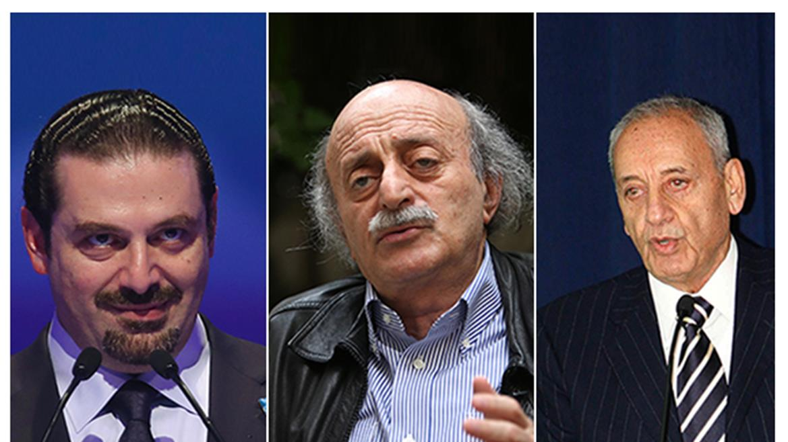

الخميس، 21 أبريل 2016
ترشيحات الرئاسة اللبنانية: من الفراغ إلى المؤتمر التأسيسي

ترشيحات الرئاسة اللبنانية: من الفراغ إلى المؤتمر التأسيسي شفيق شقير لم تستطع القوى اللبنانية انتخاب رئيس جديد للجمهورية منذ عام ...
الثلاثاء، 23 يوليو 2013
يا ليت السماء تمطر حبا
يا ليت السماء تمطر حبا فأزداد لك عشقا ويا ليت اﻷرض تثمر إخلاصا فأزداد منك قربا، بعد أن تملك مني العجز وفقدت الرؤية: ﻻ أملك إﻻ التمني
...المزيد